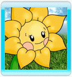

Lorsque vous jouez en mode Aventure, Follie explore
Elilia - la planète mystérieuse où son vaisseau s'est écrasé.
Déplacez Follie jusqu'au curseur en pointant la télécommande Wii vers l'écran et en appuyant sur le bouton A. Si l'endroit où se trouve le curseur est inaccessible pour Follie, celui-ci deviendra rouge.
Lors de son exploration, Follie croisera différents lieux, personnages et objets :
- Graines d'Artifleur :

Ces graines ont été dispersées lors du crash. Ramassez-les pour pouvoir faire pousser des fleurs d'Artifleur sur les sites de plantage, et ainsi accéder à un nouveau niveau.
Quand Follie termine un niveau, elle reçoit de nouvelles graines.
- Sites de plantage :

Chacun de ces sites brillants marque l'emplacement d'un nouveau niveau.
Avant de pouvoir jouer à un niveau pour la première fois, le joueur doit posséder les bonnes graines. Déplacez-vous sur le site de plantage pour découvrir quelles sont ces graines.
Une fois un niveau terminé, il peut être rejoué autant de fois que souhaité (sans avoir besoin de nouvelles graines). Lorsque vous terminez un niveau, vous recevez de nouvelles graines ainsi qu'un classement de 1 à 5 étoiles.
- Nains agaçants :

Ces nains agaçants et inutiles empêchent Follie d'explorer la planète à loisir.
Follie peut utiliser son Pouvoir Étoile pour les pacifier et ainsi pouvoir emprunter les chemins dont ils bloquent l'accès. La valeur affichée sur chaque nain est le Pouvoir Étoile minimum dont Follie a besoin pour le pacifier.
Placez-vous à côté d'un nain pour le pacifier.
- Astuces :

En explorant, Follie croisera des panneaux et des astuces (sous forme de points d'interrogation). Ces dernières vous donnent des conseils et vous expliquent les stratégies à suivre pour maîtriser le jeu, tandis que les panneaux révèlent l'histoire et les secrets d'Elilia.
Les joueurs expérimentés peuvent désactiver les astuces dans le menu d'options.
- Indigènes :
Follie croisera de temps à autre un des habitants originaires d'Elilia. Ceux-ci offriront à Follie de précieux conseils, et pourraient lui vendre à l'occasion un nouveau pouvoir en échange de pièces.
Mettez-vous devant un indigène pour lui parler.
- Pièces :
Ramassez les pièces qui sont éparpillées un peu partout dans le monde en passant dessus.
Si vous rencontrez un indigène, il pourrait bien vous proposer de vous vendre un pouvoir en échange de ces pièces.